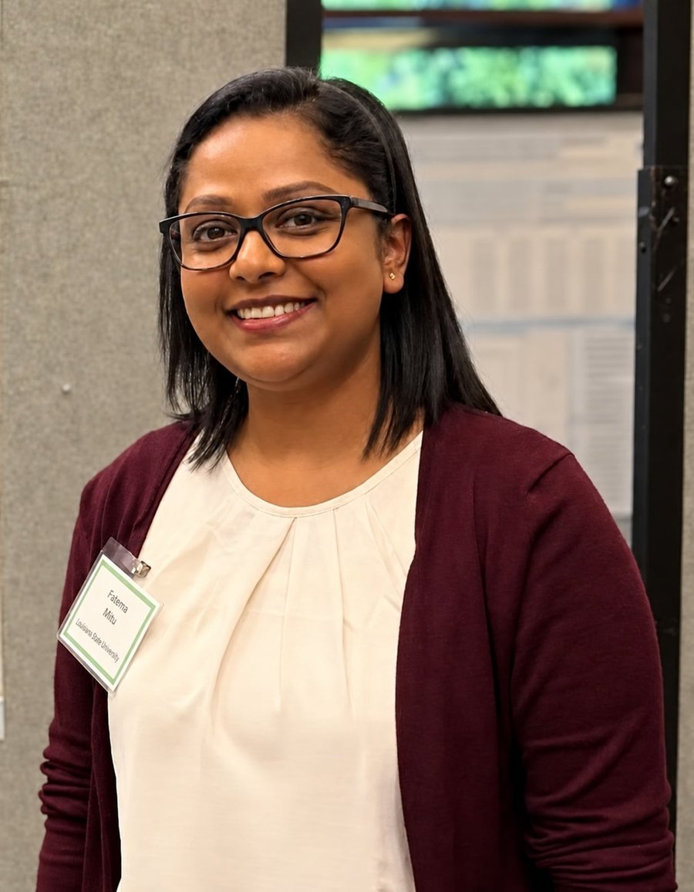
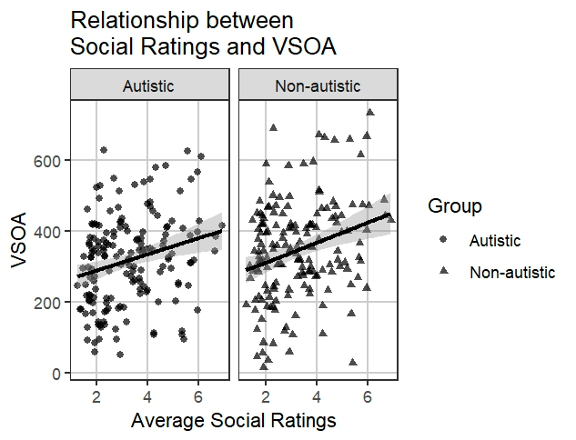

2025
Child language · Autism · Parent–child interaction
Fatema Akhter Mitu
I'm a speech and language therapist turned researcher. I study how young children — autistic and non-autistic — learn their first words, and how parents respond when their children communicate, across cultures.
- PositionPh.D. candidate · Graduate Research Assistant
- DepartmentCommunication Sciences & Disorders
- UniversityLouisiana State University, Baton Rouge
- LabLanguage NeT Lab (Dr. Eileen Haebig)
- FocusEarly word learning · Autism · Parental responsivity

Research
How children learn words, and how parents respond.
I bring a clinician's questions into developmental science: which features of words make them easier or harder for young children to learn, and how best to capture the ways parents respond to their children — linking what parents report with what we observe, in diverse cultural contexts.
Current work
Dissertation
Parental verbal responsivity
Responsive parent talk is closely linked to children's language development, yet it is measured in two very different ways: questionnaires that parents complete, and trained coding of recorded interactions. My dissertation links direct observation and parent-report measures of verbal responsivity, in diverse cultural contexts.
Manuscript in preparation · with E. Haebig & W.-C. Su
Behavioral Sciences · 2025
Social word features in early word learning
Words rated as more social — about people, roles and interactions (teacher, hug) rather than non-social concepts (rock, sleep) — tend to be learned later in vocabulary development. The pattern holds for autistic and non-autistic children alike, even after accounting for how often children hear each word, and is strongest for nouns.
Outreach
Guidance for families and teachers
Talks for parents, caregivers and teachers at Baton Rouge's C. W. Austin Learning Disabilities Conference: on bilingualism and language development — myths, evidence and guidance (2026) — and on evidence-based strategies to support children with language learning disorders (2025).
with E. Haebig
Selected result

Publications
Papers, posters and talks.
Peer-reviewed research and work in progress, then conference and invited presentations — from Dhaka in 2009 to Atlanta and Panama City in 2026.
Journal article
In preparation
—
Do parent-reported responsivity measures reflect what we see? Alignment with observed parent verbal responsivity
Presentations
2026
Autism and early word learning
2026
The influence of social word features on early word learning in autistic and non-autistic children
2026
The roles of parental stress and children's adaptive functioning on parent–child interactions and developmental outcomes
2026
Bilingualism and language development: Myths, evidence, and guidance for parents, caregivers, and teachers
2025
Evidence-based strategies to support language development in children with language learning disorders
2013
A comparative study of commercially available thickening agents to Bangladeshi-available thickening agents for representation of thickened fluid consistencies, taste, and texture
2009
Autism and speech and language therapy
Teaching
Teaching and mentoring.
Instructor of record for introductory courses at LSU, lab instructor and teaching assistant for upper-level courses, and mentor to undergraduate researchers — building on years of training clinicians, teachers and parents in Bangladesh.
At Louisiana State University
COMD 2081
Introduction to Communication Disorders
Instructor of record Spring 2022 · Fall 2022 · Spring 2023
COMD 2050
Introduction to Language
Instructor of record Spring 2024
COMD 4380
Speech and Language Development
Lab instructor Fall 2025 · Fall 2026
COMD 4382
Basic Language Disorders of Children
Teaching assistant Spring 2025 · Spring 2026
COMD 4153
Acoustics of Speech and Hearing
Teaching assistant Spring 2023 · Spring 2025Mentoring undergraduate research
2026
Do parent-reported scores align with observation-based coding of parent responsivity?
2026
Examining the agreement between parent-reported and directly coded parent behaviors of scaffolding child language skills
Earlier teaching
- 2012–13Co-trainer, national-level training program of the International Centre for the Advancement of Community-Based Rehabilitation (Queen's University, Canada), Dhaka — 152 hours across four modules on inter-professional collaboration in disability and maternal and child health
- 2009Teaching assistant to visiting Prof. Beverly Joffe (La Trobe University) — SLT 303: Child Speech/Language Delay or Disorder, University of Dhaka
Clinical practice
From clinic to lab.
Before research, I spent over four years as a speech and language therapist in Bangladesh — working with children and adults with communication and swallowing difficulties, leading a hospital department, supervising students, and training teachers, parents and doctors in autism.
-
2003–04
Research assistant, before university
Dhaka, BangladeshAssisted Dr. Melanie Adams's doctoral study (University College London) on the management of feeding difficulties in children with cerebral palsy in Bangladesh.
-
2009
B.Sc. in Speech & Language Therapy
Thesis comparing commercially available thickening agents with those available in Bangladesh — thickened-fluid consistency, taste and texture, for people with swallowing difficulties. The same year: speech and language therapy leader with Operation Cleft Australia, and a first conference talk, on autism and speech and language therapy.
-
2009–13
Therapist, then head of department
A clinical internship across pediatric, adult and special-school settings, then clinical practice as a speech and language therapist. From 2011 I headed CRP's Speech & Language Therapy department and supervised University of Dhaka students — fifteen interns a year.
-
2010–13
Training in autism, across Bangladesh
Dhaka and six other districtsAutism training for special-school teachers and parents; for doctors at Bangabandhu Sheikh Mujib Medical University, and a three-day hands-on course at Chittagong Medical College (2012). Co-trainer in a 152-hour national program on disability and maternal and child health led by Queen's University, Canada, and a member of the National Technical Guidance Committee on Autism and Other Neurodevelopmental Disabilities.
-
2014–19
Graduate study and autism research
Buffalo, New YorkVolunteered in the University at Buffalo's Communication and Assistive Device Laboratory; completed an M.Sc. (2018) with a project on the challenges professionals face in providing AAC devices; and worked at Canisius College's Institute of Autism Research, including its Summer MAXout program.
-
2022–
Ph.D. in Communication Sciences & Disorders
Louisiana State University, Baton RougeGraduate research assistant in the Language NeT Lab with Dr. Eileen Haebig, working on early word learning and parental verbal responsivity. Now a Ph.D. candidate; degree expected Spring 2027.
Curriculum Vitæ
A glimpse of the record.
Education, awards and service at a glance — download the full CV (PDF) ↗.
Education
Ph.D. in Communication Sciences & Disorders
Louisiana State University, USA Expected Spring 2027
Advised by Dr. Eileen K. Haebig. Dissertation: Understanding parental verbal responsivity: Linking direct observation and parent report measures in diverse cultural contexts.
M.Sc., Social Science Interdisciplinary
University at Buffalo (SUNY), USA · 2018
Concentration in Communicative Disorders & Sciences.
B.Sc. in Speech & Language Therapy
University of Dhaka, Bangladesh · 2009
Grants & Awards
- 2026ASHA Research Mentoring-Pair Travel Award, with Dr. Eileen Haebig — ASHA 2026 Convention
- 2025Juneau Child Language Research Grant
- 2025LSU Graduate Student Association Travel Award
- 2025LSU College of Humanities & Social Sciences Graduate Student Conference Travel Fund
- 2025LSU Communication Sciences & Disorders Ph.D. Student Travel Award
Service & memberships
- 2026–Member, Louisiana Speech-Language-Hearing Association
- 2025Co-reviewer, Autism & Developmental Language Impairments
- 2022Student volunteer, ASHA Convention
- 2012–13Member, National Technical Guidance Committee on Autism and Other Neurodevelopmental Disabilities, Bangladesh
Methods & tools
Observational codingParent-report measuresLanguage sample analysisRegression modellingRSPSSSALT
Languages
Bengali · nativeEnglish · fluentHindi · conversational